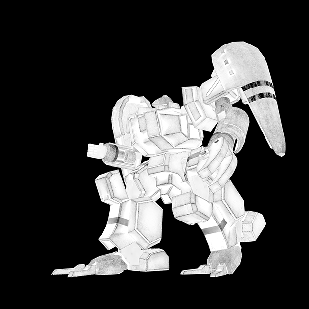
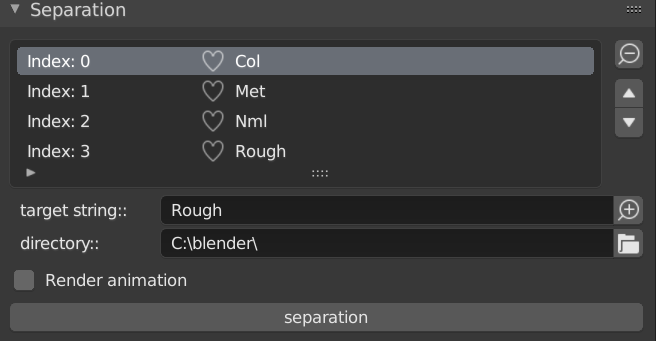
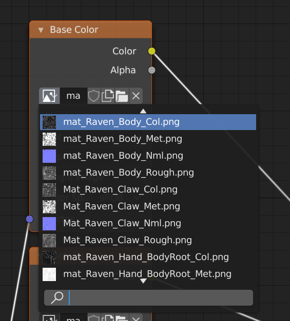

Blender scripts:Download&Install
You can download Blender scripts.
If you want know implementation feature, please refer to each description
・Download
Blender_scripts.zip
・Getting a Git Repository
※If you don't know what this is about, you can skip the following steps.
If you want Git Repository, if you have already set up Git, move directory of your choice in shell, and run the following command.
If you have not set up Git, you can get Git from this.
$ git clone https://github.com/akim-muto/blender_scripts.git
・Install
Start Blender, next select Edit→Preferences→Add-ons→Install, you want install .py file selected on file browser to push 'Install Add-on from File'.
Separation
This script identify fixed character in file name of placed texture on node editor to render base color,metalic,roughness,normal,etc.
※Data of Raven that used following description is provided from the Trypticonでありカーバンクルさん.




・Manual
1.Menu of Separation
If it have already install, menu of Separation is in render panel.
2.Set fixed character
Separation identify and use fixed character that texturefile when rendering.
Therefore, you need to include fixed characters in each type of texture file.
Input fixed character on textbox affixed label "target string", and "+" on next to textbox click to added fixed character in list. Please add fixed character you want render each type of texture file.


3.Set output directory
Set output directory when rendering. Default is "C:\blender\"
Icon on next to affixed label "directory" click to open the filebrowser, and open you want setting directory. next click "open browser".
If it have input file name, delete file name to only directory is.
4.Rendering
If render animation, check checkbox affixed label "Render animation".
Finally please click "separation".
5.Notes
If you have set composite, There are cases where can't rendering. If Uncheck "Use Node" on compositor, There are cases where can rendering.
Pivot change
This script change select vertex on edit mode to pivot point on object mode.
・Manual
Change to edit mode, and select a vertex on vertex selection mode. next push [d] on keybord.